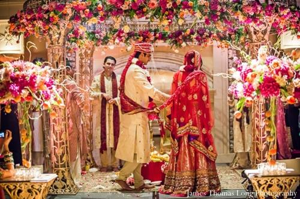
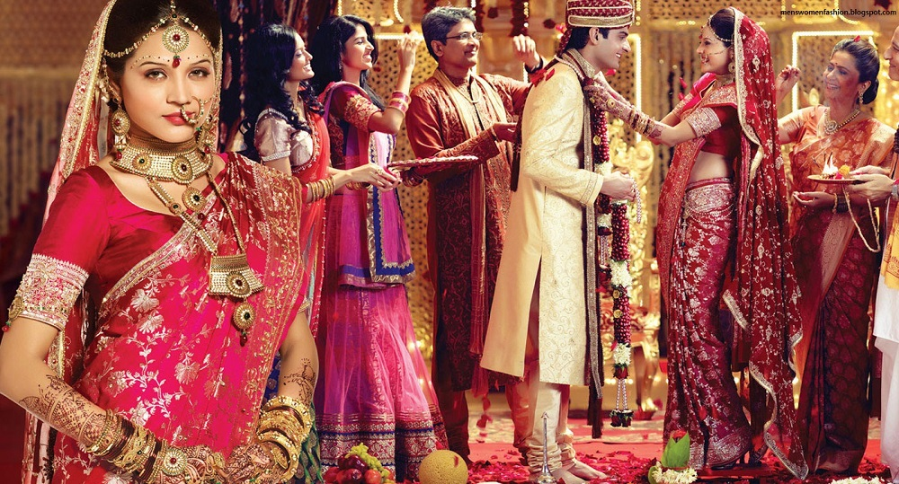
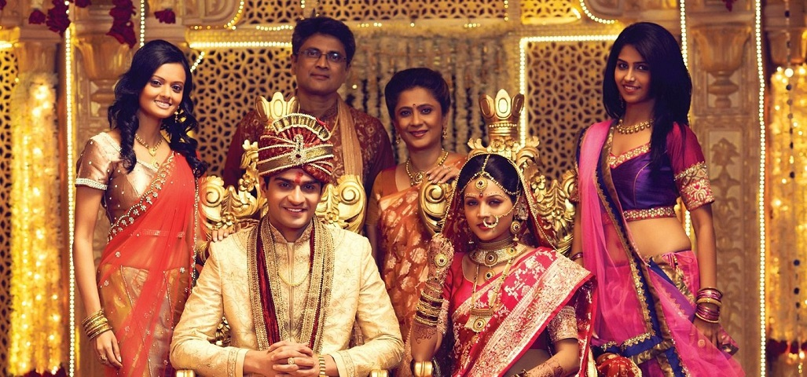
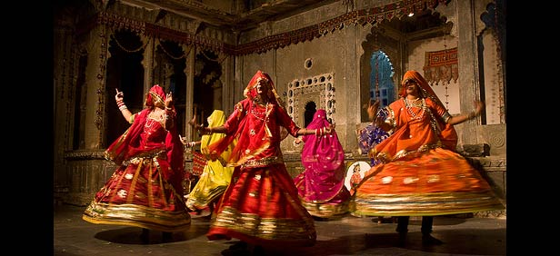
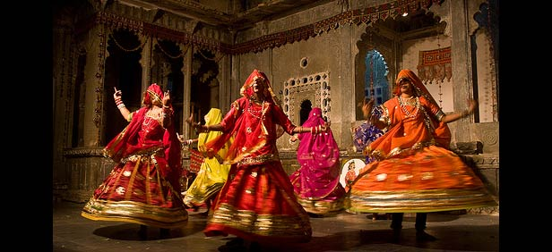
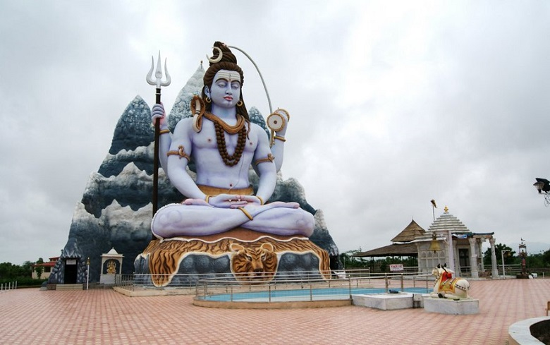
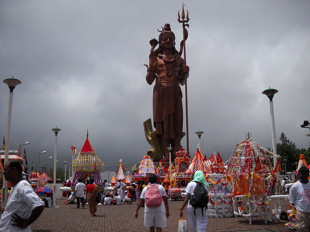
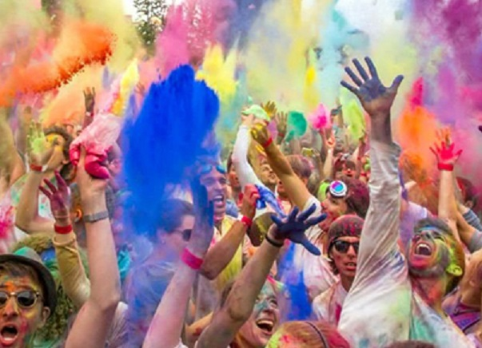
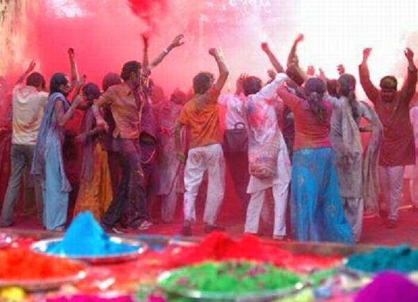

Uttar Pradesh
- Home
- Food

- Fashion
  
- Festival
- Holi
- Maha Shivratri
-
Taj Festival
 

Taj Festival
The Taj Festival in Agra is an annual extravaganza that reveals the rich cultural heritage of our country and displays the finest specimens of Indian craftsmanship. All year long the people of Uttar Pradesh wait expectantly for this festival held at Silpagram near Taj Mahal..
 Maha Shivratri
Varanasi is dotted with a large number of temples. Maha Shivratri in Varanasi is celebrated in honor of Lord Shiva, the presiding deity in most of these temples. This festival is particularly popular with women who pray to the lord to be blessed with a husband like him. In Indian mythology, Shiva is an ascetic god which is why ascetics also participate whole heartedly in the worshipping and merry making. . -
Taj Festival
 Holi
The auspicious festival of Holi is the most anticipated one in the Kumaon region and is celebrated from the outset of Basant Panchami. The festival is a fusion of colours, spirituality and music commemorated at a wide extent for two months. Music is the heart of the festival in which the locals are very specific about the ragas where Bhimpalasi, Peelu, and Sarang are chanted post dawn while in evening they revel in Shyam Kalyan, Yaman and Kalyan ragas. There are diverse forms of Holi like Mahila Holi, Baithaki Holi, and Khadi Holi. The food that is prepared on this occasion includes Gujia, fried potatoes namely Aloo Gutuk served with jamboo, a Himalayan spice.. - Maha Shivratri
- Holi